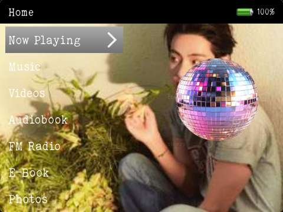

Tae Aestethic <3

Загрузите тему Tae Aestethic <3 для Innioasis Y1 от Irirella и персонализируйте внешний вид своего плеера с помощью специально подобранных ресурсов пользовательского интерфейса. Works on the Innioasis Y1 and Y2 with the Original Software, Better-Y, Koensayr and Solar.